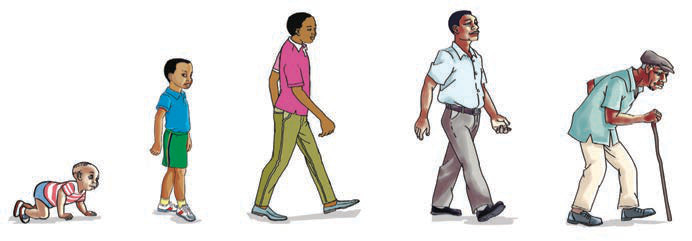

to make the body function properly. Also, animals respond to optimum amount of light in their environment. In some species, proper lighting stimulates appetite and hormone production, improving growth and productivity.
Water availability
Animals require constant access to clean and safe water. Water is essential for digestion, control of the body temperature, and transportation of nutrients, all of which are important for growth.
The following are examples of changes during an animal’s growth and development:
(a) Butterflies go through different developmental stages of growth namely:
Egg → Larva → Pupa → Butterfly

- Egg
- Larva
- Pupa
- Butterfly
(b) Frogs go through the following stages of growth:
Eggs → Tadpole → Tadpole with legs → Frog

- Egg
- Tadpole
- Tadpole with legs
- Frog
(c) Human passes through the following stages of growth:
Infancy → Childhood → Adolescence → Adulthood → Elderliness

- Infancy
- Childhood
- Adolescence
- Adulthood
- Elderliness